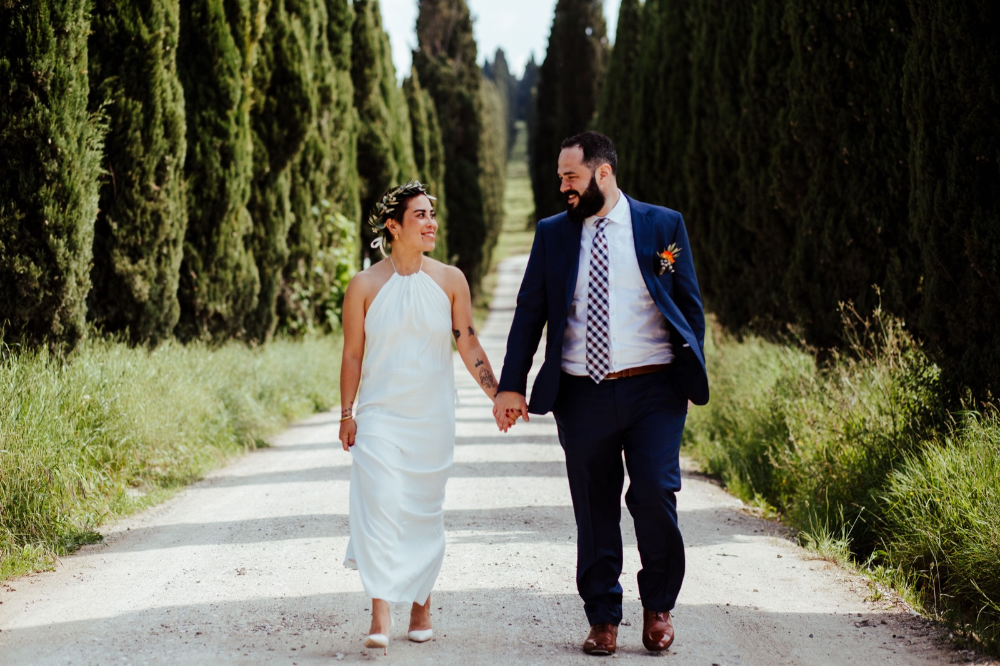
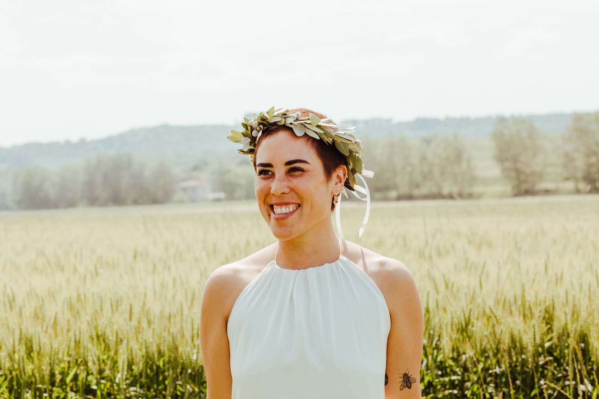
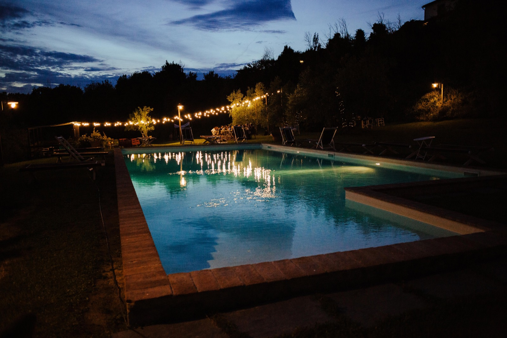
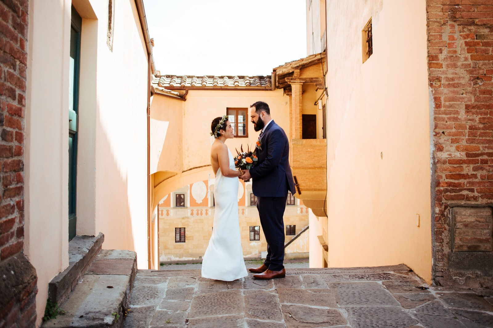
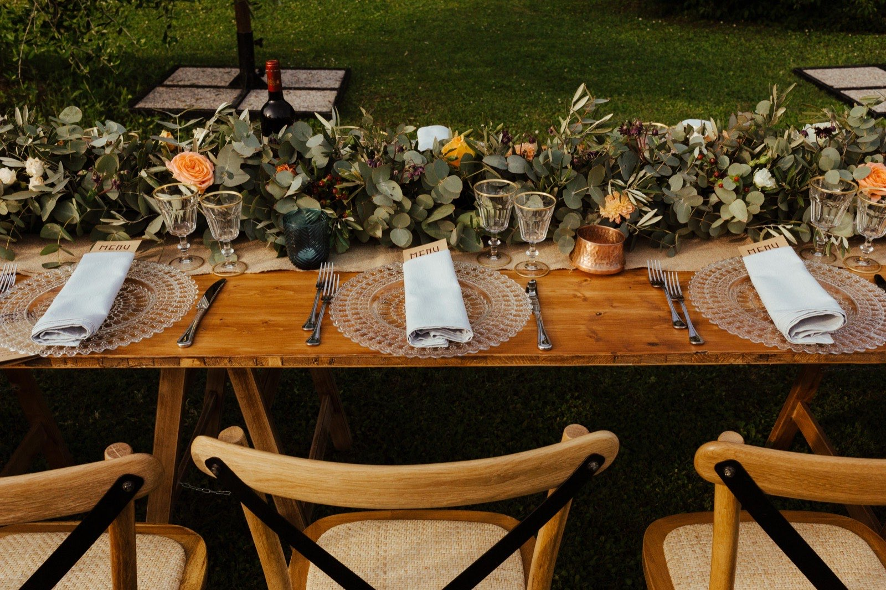

אחרי עשרות הפקות למדנו לזהות כמה טיפוסים שחוזרים על עצמם — ואולי תזהו בהם את עצמכם.
לקריאה ←
יש סיבה לכך שטוסקנה היא בירת חתונות היעד של אירופה. בעצם, יש הרבה סיבות.
לקריאה ←
זה לא רק הפסטה. זו פילוסופיה שלמה של פשטות, עונתיות ואהבה — וזה בדיוק מה שמגיע לשולחן החתונה שלכם.
לקריאה ←
חמש שעות של אירוע, שנה של תכנון. יש דרך אחרת — והיא נקראת חופשת חתונה.
לקריאה ←
למה החתן קורע את העניבה? מה עושים עם שקדים מסוכרים? ואיך אומרים מזל טוב באיטלקית? הפתעה בהמשך.
לקריאה ←השאירו פרטים ליצירת קשר ונחזור אליכם בהקדם